System requirements
- Windows XP/Vista/Seven
- A minimum of 250 Mb of hard disk space is recommended
Installation
The software will be installed on your computer.
For this type of installation, log in to the system as a normal user, then install QSoft into your main
directory C:\Program Files\ or another local directory in which you have full access rights.
You can stop the installation process at any time by clicking Cancel in the dialog box installation.
At this step, you can delete the installation directory, in this case all files and subfolders are deleted.
Starting the installation
- Installation on Windows:
- Log in as your user name
- Navigate to the directory that contains QSoftSetup.exe
- Double clicking on QSoftSetup.exe
- The installation start
Progress of the installation
- Installation language
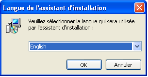Select your installation language.
- Welcome
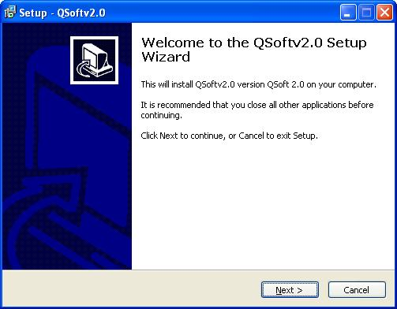Click "Next".
- Selecting the installation directory
The next dialog box allows you to select the installation directory
(the default directory is C:\Program Files\QSoftv2.3).
- Click "Browse..." to select another directory if needed. If not, will be created automatically.
- Click "Next" to continue the installation.
- Selection menu folder "Start"
Here, choose the folder shortcut that appears in the Start menu.
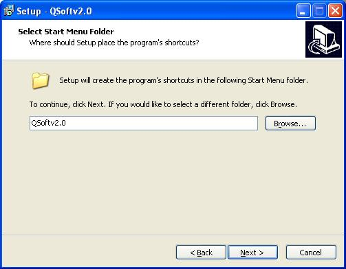- This folder will allow you to get the software QSoftv2.0 shortcut in the Start menu > All programs
- Leave the default for simplicity
- Installation option
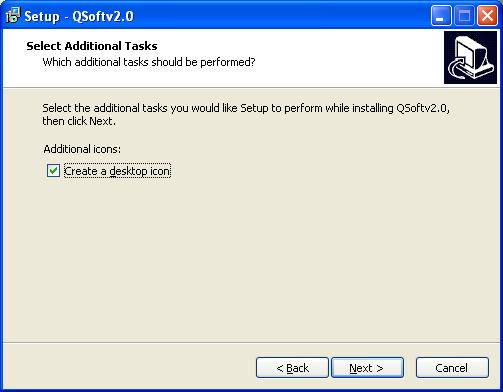- If you want to create a shortcut icon on your desktop software QSoftv2.0, select "Create a desktop icon", otherwise leave the box unchecked.
- This option wil not affect the installation. You can always create a shortcut on your desktop later.
Setup summary
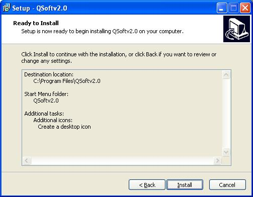
This window allows you to view the different choices you have made for this installation.
Click "Install" to start the setup.
Setup...
QSoftSetup installs the software. Wait a few minutes.
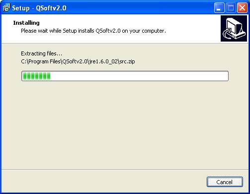Completing the setup
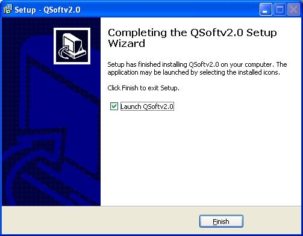- The installation was completed successfully. You can choose to satrt QSoft.
- Click "Finish"
 WARNING:
WARNING:
To use QSoft in Windows Vista and 7, after installation, right-click the icon QSoft -> Properties
-> "Compatibility" tab.
-> Check ""
Software configuration
When launching the software QSoft, you must enter some information for correct work of QSoft.
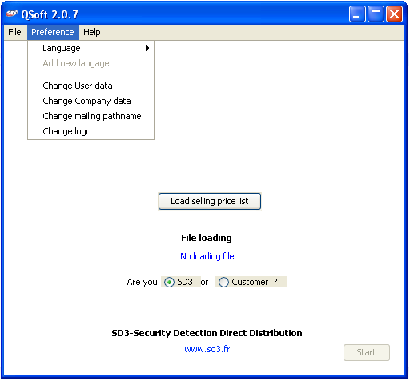Language
On the menu "Preference" > Language, select your language to use the software QSoft.
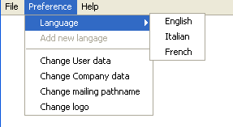User data
On the menu "Preference" > Change User Data
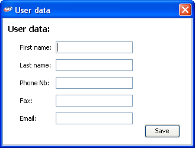Example :
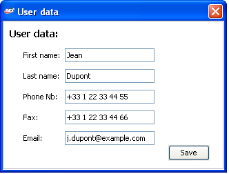Company data
On the menu "Preferenre" > Change Company Data
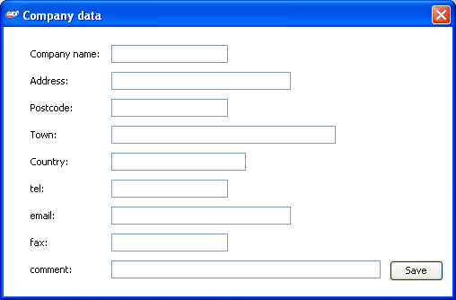Example :
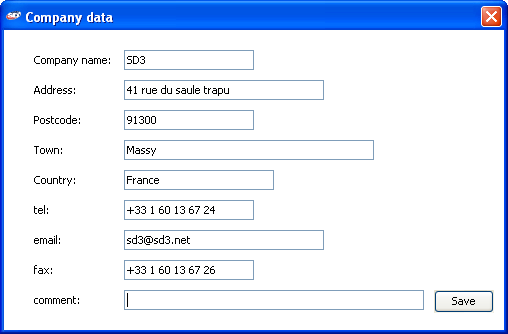Information about the mail user
On the menu "Preference" > Change mailing pathname
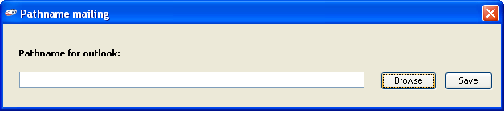
Here, specify the path to your mail program, so that you can use your mail box to send quotes directly from QSoft 2.0
Click to "Browse" for select your mail program:
Example of pathname: C:\Program Files\Microsoft Office\Office 14\OUTLOOK.EXE
If you don't have outlook, the same procedure is to with the path of your mail program.
Setting your logo
On the menu "Preference" > Change logo
You can choose the logo that will appear on your quote.
The dimensions of the image shoould not be more than 160 x 110 pixels.
The picture must match the format .jpg .png .bmp .gif
To know the size of your logo, right click on the image, then click Properties. On the Summary tab,
click "Advanced >>".
The SD3's logo is in C:\Program Files\QSoftv2.3\picture\logosd3.jpg